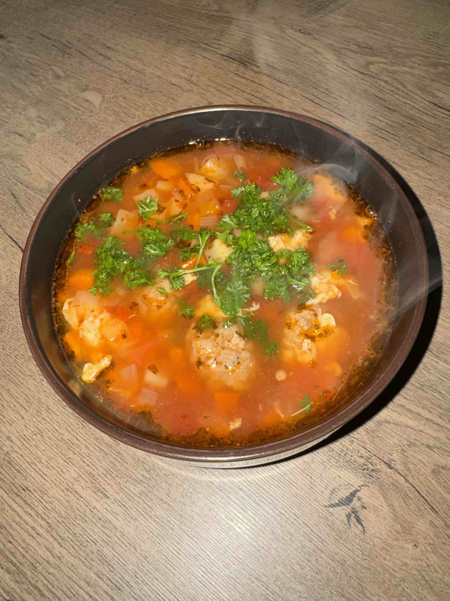

Sour soup with meatballs

Description
Perișoare soup is a traditional Romanian sour soup with tender meatballs, vegetables, tomatoes, and borș. It is warm, comforting, and full of flavor, with a slightly sour taste that makes it different from many other soups.
This recipe comes from my parents, so for me it is more than just food. It is the kind of homemade soup that feels familiar and comforting, especially when served hot with fresh parsley or lovage on top.
Ingredients
For the meatbals:
- 500 g minced meat / ground meat: chicken, beef, pork, or a mix
- 1 egg, optional
- 1 tsp salt ½ tsp pepper
- 1 tsp paprika powder, Romanian boia
- ½ tsp dried thyme, Romanian cimbru
For the soup
- carrots, diced
- 1 onion, finely chopped
- 1 bell pepper, red or yellow, chopped
- Other soup vegetables of your choice, for example celery or parsnip
- 2 tbsp oil
- 1 can chopped tomatoes
- 2 tbsp tomato paste / tomato concentrate
- 2–3 liters water
- 750 ml borș, or 1 tablespoon “borș magic” dissolved in water
- 2 eggs, beaten, for the “dregi” effect
- Fresh parsley or lovage, Romanian leuștean, finely chopped
Steps
- Prepare the meatballs
- Mix the minced meat with salt, pepper, paprika, thyme, and optionally one egg.
- Shape small meatballs on a board and let them rest for a short while.
- Cook the vegetables:
- Heat the oil in a large soup pot.
- Add the onion, carrot, bell pepper, and the oer vegetables, and sauté them briefly.
- Add 2–3 liters of water and bring to a boi
- Let the vegetables cook until they are almost tender, abt 15–20 minutes.
- Add the chopped tomatoes:
- After 12 minutes of cooking, add the can of chopped tomatoes.
- Let it continue boiling for another 8 minutes, until the vegetables are almost tender.
- Add the meatballs:
- Carefully add the perișoare to the boiling soup.
- Cook for another 15–20 minutes, until the meatballs are cooked through.
- Add the tomato paste and borș:
- After 15 minutes, add the tomato paste for extra color and flavor.
- Add the borș only after everything has cooked, then bring the soup back to a boil.
- Let the soup boil briefly so the borș heats through properly.
- Optional: add the egg:
- Beat 2 eggs.
- Slowly pour the egg into the boiling soup without stirring, so it sets into thin strands.
- Finish:
- Add the finely chopped fresh parsley or lovage.
- Taste and add extra salt or sourness if needed.
Home